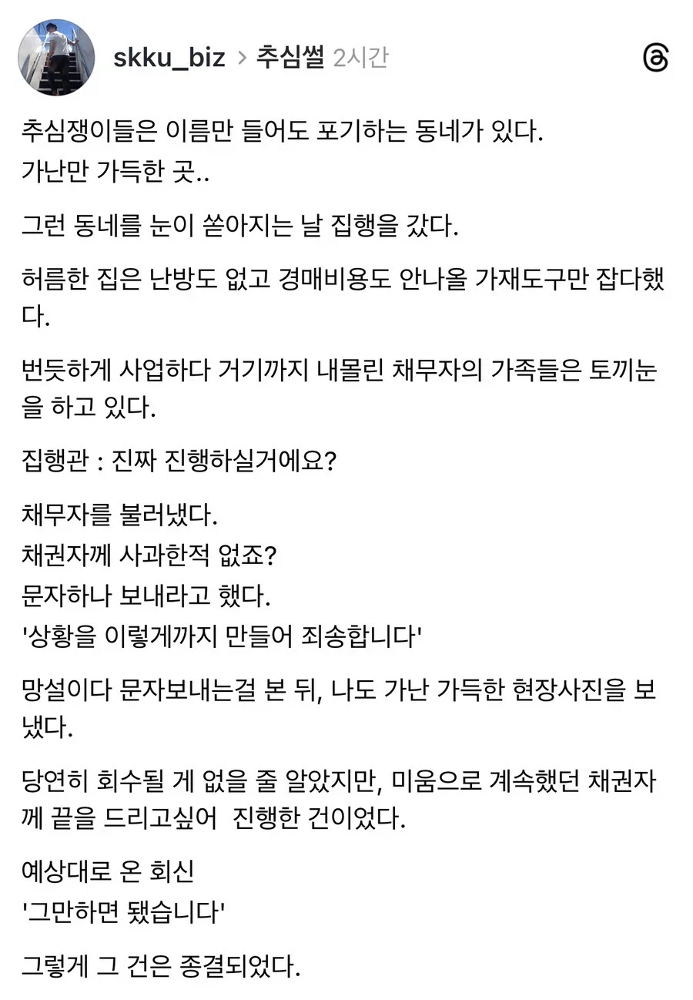

아
다수 건의 경험에 의하면 그게 일반적입니다.
저건 채무자고 .. 사기꾼은 봐주는거 아님
가족이 빚져서 추심 당하는데..
저런거 없었음. 어머니 혼자 자영업 망하고 우울증에 심부전 와서 단칸방 집에 누워있는데도, 단 400만원 추심하겠다고 유체동산 압류 걸고 있더라.
결국 내가 갚아주고 마무리함.
그러라고 유체동산 압류하는 것입니다.
상대가 재정적으로 여유가 있는 사람이어서 불쾌하게 느낀거지.
결국 잘못은 어머니가 한거지만, 지인 상황 정확히 알면서도 압류진행한건 사람 아니라고봄.
이미 어머니에게서 받기 글렀다고 생각하면서도, 이렇게까지 하면 뭐 사촌이나 자식들이라도 갚아주겠지 생각하면서 압류한거잖아?
이런게 쿨찐 소패 아닌가 싶기도하고.
아 이런 마인드였구나
음..
재정적으로 여유있는 사람에게도, 자영업 망하고 심부전 앓고있는 사람에게도 아이폰 2대쯤 살수있는 같은 화폐가치를 지닌400만원아니냐?
그래서 결국 압류까지 가서야 네가 뚝딱 갚아줬으면 채권자 의도대로 잘 진행된거네 ㅎㅎ; 압류안했으면 채권자는 자기 생돈 400만원 걍 날린건데.. 정 서운하면 전에 잘갚지 그랬어.
얼마가됐던 가까운 지인에게 빌렸으면 잘 갚는게 당연한거지 뭔 변소 들어갈때 나올때 다르냐ㅋㅋ
보통 그런걸 쿨찐이라고 합니다
고의적으로 안 갚은거도 아니고, 나중에라도 형편 나아지면 갚겠소 하는 사람에게
ㅎㅎ 개소리 하고있네 압류걸면 어떻게든 돈 마련해오겠지?(없으면 자식놈들이라도 긁어오던가)
이러면서 채권 추심업자에게 넘겨버리는거.
실제로 압류거니까 그놈의 형편 나아지지도 않았는데 호다닥 400 마련했잖아 ㅎ?
왜 자꾸 본인 입장에서만 생각하는지.. 니 호주머니에 들어있는 (남한테 빌려온) 돈만 귀하냐?
형편 나아지면 갚겠다는건 니생각이지 빌려준 사람생각이냐고 ㅋㅋ 어휴
보통 그런걸 쿨찐이라고 하진 않지
그럼 나중에라도 형편 괜찮아지지 않으면 안 갚을거야?
돈 안갚는게 쿨찐소패 아닌가?
와 좀 충격적이네... 상대가 재정적으로 여유가 얼마나 있는지 정확히 알 수 있어?
돈 꽤나 있어도 순간순간 현금 몇백 흐름때문에 문제 생기는 경우가 있는데
왜 본인 사정만 알아줘야 하냐
상대 상황은 왜 추심을 진행하는지 어떤 상황인지 조차 모르면서
네가 "받기 글렀으면서 사촌이나 자식이 갚겠지"라는 답을 정해놓았네
그리고 애초에 빚을 갚지 못하니 추심을 당하는건데
무한정 사정보면서 기다려 주는걸 기대한다면
애시당초 갚아줄 역량 되는 네가 갚아줬으면 문제 없는거 아니냐?
너는 가족이고 상대는 남인데?
이미 어머니에게 나도 2천 빌려주고 지금까지 못받음. 당연히 따로 살고있었고.
그거 미안하니까, 엄마가 압류 딱지 붙을때까지 혼자서 아무말도 안하고 혼자 집에서 은둔생활 하고 있었음.
채권자들에게는 전화 올때마다 미안하다 나중에 갚겠다 이러고만 있었던거.
나도 그런 상황 알게되고 머리가 띵한데.
채권자들중에 그 아저씨(나도 아는 지인임)
한명만 바로 재빠르게 채권업체에 넘긴거임.
씹 멀쩡하게 재산도 충분하고 사업도 잘돌아가는 사람인데.
사정을 봐주면 고마운거고
안 봐주면 어쩔 수 없는거지
진짜 지인들간에 돈 거래는 하는게 아니구나 싶다
222222
안타까운 상황이고, 어머니께서 하루빨리 재기해서 떳떳하게 아들한테 빚도 갚고 성공하시길 바란다.
하지만 사정이 그리하더라도 그 아저씨를 욕할게 안된다.
반대로 네가 그 아저씨 입장이 되어봐
지인 자영업하는데 돈 빌려달라고 해서 빌려줬더니 업장은 문닫았고
찾아가보니 빚갚으려는 노력은 안 보이고 은둔생활중이고..
어? 그런데 번듯한 자식있네?
왜 내 돈은 안 갚는거야?
이러지 않겠냐?
채무이행능력을 상실했고, 말만 갚겠다 하는데 기약없이 어떻게 기다려?
이런 상황에서 어려운 상황 이해해주고 기다려주는 건
다른 채권자들이 인내심과 정이 많은거지 그 아저씨가 나쁜 사람이 절대 아님..
일반적으로 친분 있는 지인이었으면 사업 망한거 알았을때 좀 기다려주는것이 정임.
문 닫은지 6개월이나 지났나 싶은데 칼같이 채권추심업체 보내는건 너희들이 말하는 합리적이고 이성적인 판단이고.
그럼 은둔하지 말고 사정을 설명하고 양해를 구하는 노력을 해야 맞는게 아닐까싶다 우울증으로 힘들어서 그런선택을 한건 채권자는 모르니까
백번 양보해서 좀 차갑다고 할순있어도 상식적인 선 안의 행동인데, 그걸 사람도 아니다 쿨찐소패다 하는걸 보니... 진짜 지인간에 돈거래하는거 아니구나
니 입장에서야 문 닫은지 6개월 밖에지 다른 사람 입장에선 문 닫은지 6개월 씩이나 된거임
진짜 역하다는게 이럴때 쓰는 표현이구나..와우..
비추 몇개야?
재산도 충분하고 사업도 잘 돌아간다는건 채무자가 고려해야할 사항이 아닌데? 그리고 보통 지인들한테 돈 빌려주는 사람들은 여러사람한테 빌려주는 사람들이 대부분인데 하나하나 사정 고려하면 그 사람은 빌려준 돈 언제 돌려받음
사업이 잘 굴러가도 사업 특성상 당장 현금이 부족할 수도 있는거고
그냥 아는 사람은 남이야. 좋을때만 잘지내는 사람들. 400정도면 친구였으면 난 안그랬을거야. 고등학교 졸업하고 친구들과 돈거래 안 하기로 서로 약속했지만 힘든친구가 있다면 어느정도 준다고 생각하고 빌려줄 것 같긴함. 그리고 너가아는 그사람이 정말로 여유가 있는지는 모르지 겉으로만 그렇게 보여지는 사람도 많더라. 사회에서 만난 사람은 대부분이 남이더라. 돈이 무섭고 정이야. 친할 수록 더 돈 관계 확실해야하고 조심해야함.
고맙다 너 덕분에 돈빌리는 애들이 어떤 생각하고 있는지 잘 알게 됐음
와 갑자기 머리가 띵해지네
통장에 혹시 돈 존 있으십니까? 100만원만 주쇼 ㅋㅋㅋㅋㅋ
남의돈 빌려놓고 안갚는 사람이 쿨찐 소패인거 아니야?
윗 댓글에 써있듯이 그러라고 압류하는거임. 채권자 입장에선 소송하고 압류에 집행까지 가는게 상당히 번거롭고 비용도 꽤 나오는데 오죽했으면 그렇게 했겠냐
너희 어머님 사정은 딱하지만 만약 너가 남에게 400 빌려주고 못받았다 생각해봐 그냥 넘어갈수 있음?
규정이 그렇겠지. 할 수 있으면 해야지. 할거 다 했는데 회수가 안되는 건 책임질 필요가 없지만 할 수 있는데 안해서 회수를 못하면 그건 회수담당자가 변상해야 할 문제가 되니까. 담당자가 직장에서 징계받고 생판 남의 빚도 갚아주고. 그래야 되나?
빌려준 사람은 그 돈 받아서 자기도 꾼 돈 이자 내고, 갚아야 할 돈 갚고 그러는 거 아님? 그게 이어지는 사슬에서 한 군데에서 연체가 되면 그 사슬이 끊기거나 흐름이 막히는 거임 지인? 지인도 그 현금흐름 계산해서 자금 운용 계획이 있을 텐데, 그 계획에 차질 생기는 거임. 그 이후로 계속 차질 빚는 사람 나오게 되는 거고.
그건 니 사정이고, 상대방은 니 사정 알 길이 없음.
상대방한텐 400만원이 돈 아니냐? 그럼 니가 그 사람찾아가서 사정사정 해서 미뤄달라고 해봤냐
이래서 돈 빌려주지 말라는거구나
돈 빌리는 애들은 다 이 마인드구나 ㅋㅋ
갚을수있는데 안갚고 진짜 못됐다
개쓰레기새끼
마인드도 쓰레기네
돈 떼먹는 새끼들 마인드는 이렇구나
자기 잘못 인정하는 걸 자존심과 연결짓는 병신들이 많더라 특히 요즘은.
크흡
밑바닥 하류층들 불법으로 추심한 이야기를 직접 들은 적 있는데 저런 합법적인 추심과는 결이 완전 다름
주작
만원이상 가치라도 될법한 물건이 쿠쿠하나였던 현장 본적있음. 보증금조차도 없는 방이었어 ㅜㅜ
나 원룸에 내꺼라곤 쿠쿠밥솥, 10년다돼가는 중고컴터모니터밖에 없는데 압류들어올려나? 오면 진짜 밥솥하고 컴터가져가나? 컴터에 은행뭐시기같은거 다있는데?
휴대폰,카드회사들이긴한데
휴대폰, 카드 회사들이 더한다
압류 뭐 별거 없음
추심 하고 내용증명 보내고 민사소송거고 지급명령 나오는데 안갚으면 똑똑 - 집행하러 왔습니다
강제집행하고
밥솥은 생필품이라 압류 금지품목
컴터는 니가 생업 생활에 꼭필요하다! 하면 안가져감
컴터가 생업에 필요한때가 뭐가 있을까? 무슨일에 쓰는데요? 하고 물어볼것같은데
법원 압류물 경매 품목들 찾아봐
하다못해 접이식 의자까지도 압류함.
어디 갖다 버릴 잉크젯 프린터부터 버리는게 돈이 드는 책장까지 다 압류됨.
근데 티비나 냉장고 같은건 원룸에 원래 있던건데 그런건 어떻게 구분하지?
추심자가 사과하라고 하기 전까지 사과할생각도 안했다는게 소름돋네
기생충들 마인드는 역겹기 그지없다
염치도 없고 이기적이고 더러운놈들
저기 윗 댓글보면 한 놈 있음
지금와서 다시 글 보니 사람마다 다르다는 생각이 들었다 라는 문장을 빠뜨렸네